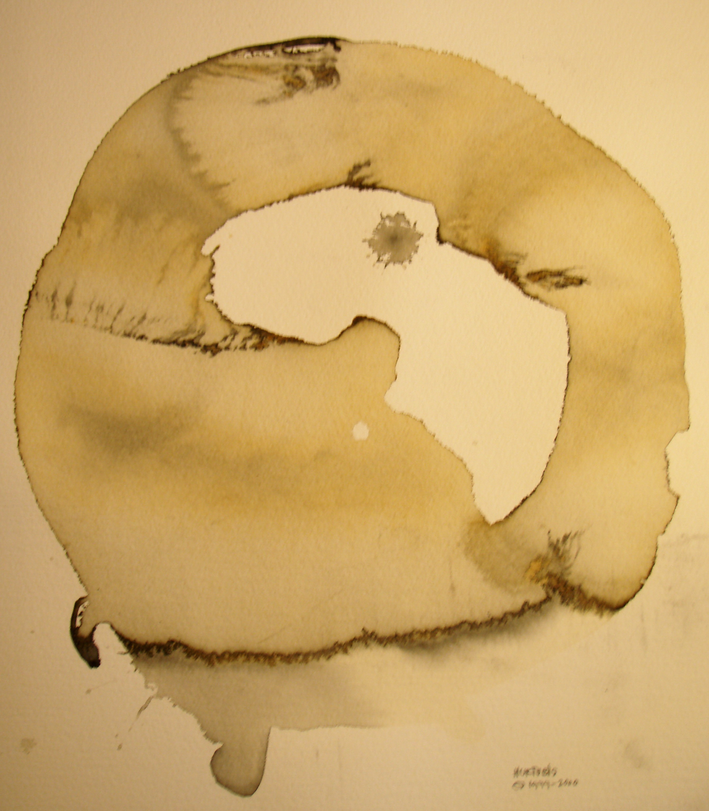

45 years · art · architecture · interior design · permaculture · land planning · community
coherence legacy

Welcome to my Legacy SDCC website. I hope that your time on my architecture and design site will inspire you to creation at the highest level.... and maybe.... it will be the genesis of a beautiful opportunity of co-creation and exploration.
I am now retired from providing professional design services and am focused on the freedom of art-creation as viGoArtes. This is my legacy site sharing some of my prior work of 45 years in Architectural, Interior Design, Permaculture, and Project Planning and Management.
As consulting architectural, permaculture, and interior designers, I and my teams entered a holistic, co-creative process with our clients to assist them in expressing their lives, farms and vineyards, wineries, communities, retreats, retreat centers, healing environments, and even ski resorts in sustainable and multi dimensional ways. My prior work for forty five years was exclusively focused on the creation of one of a kind environments imbued with deep reverence for the natural world and the human co-habitation in reverence, and indeed awe, for this remarkable planet earth and all that thrives on it.
finn (viGo)